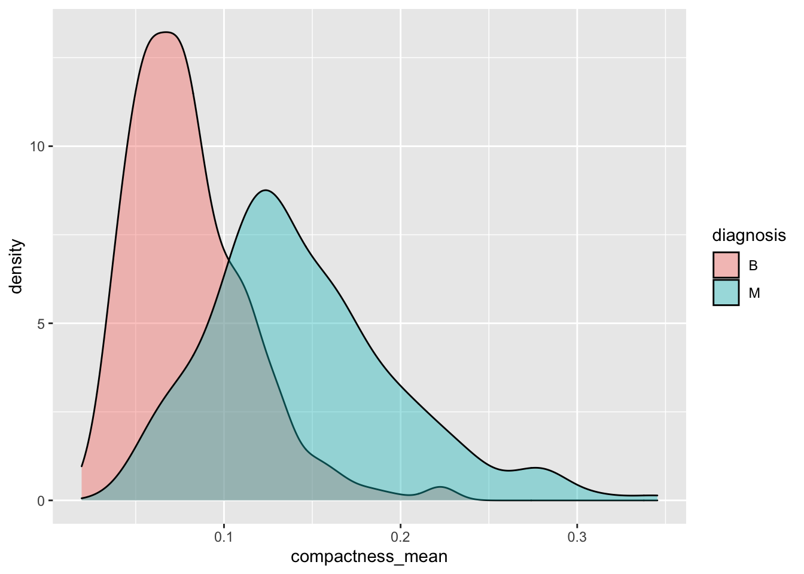

#Instructor: Jack Robbins
#Student: Redacted
# load data and set "B" (benign) as the reference level
library(tidyverse)
cells <- read_csv("https://www.dropbox.com/s/0rbzonyrzramdgl/cells.csv?dl=1") %>%
mutate(diagnosis = factor(diagnosis, levels = c("B", "M")))
library(ggplot2)Lab 8: Diagnosing Cancer
The diagnosis is in the column named diagnosis; each other column should be used to predict the diagnosis.
Understanding and Exploring the Data
Question 1
What is the unit of observation in this data frame?
Benign/malignant
Question 2
Use a box plot to compare the radius_mean for benign vs. malignant biopsies. What is the takeaway from this plot? ::: {.cell}
boxplot(radius_mean ~ diagnosis,
data = cells,
horizontal = TRUE,
main = "Mean Radius By Diagnosis",
xlab = "Mean Radius",
ylab = "Diagnosis")::: Based on this boxplot, malignant tumors have a larger mean radius. We will keep this in mind when doing our regression later.
Question 3
Select another variable that you suspect might be a good predictor of the diagnosis. Build a plot to illustrate their association and provide an interpretation of what the plot shows. ::: {.cell}
boxplot(texture_mean ~ diagnosis,
data = cells,
horizontal = TRUE,
main = "Mean Texture By Diagnosis",
xlab = "Mean Texture",
ylab = "Diagnosis")::: The mean texture is higher for malignant tumors than benign ones. Benign have many more outliers than malignant ones.
Question 4
Make a plot that examines the association between two predictors, radius_mean and area_mean, and calculate the pearson correlation coefficient between these them. How would you describe the strength and shape of their association? What might cause this shape? ::: {.cell}
cells %>%
ggplot(aes(x=radius_mean, y=area_mean)) +
geom_point()+
xlab("Mean Radius") +
ylab("Mean Area") +
ggtitle("Mean Area VS. Mean Radius")cor(cells$radius_mean, cells$area_mean)[1] 0.9873572::: The Mean Radius and Mean Area are very strongly linearly correlated, with a correlation coefficient of 0.98. This happens because, usually, for symmetrical tumors, the area and radius are directly related.
Question 5
Make a single plot that examines the association between radius_mean and radius_sd separately for each diagnosis (hint: aes() should have three arguments). Calculate the correlation between these two variables for each diagnosis.
Give an interpretation of these results. In particular comment on
- Is the relationship between `radius_mean` and `radius_sd` different for benign biopsies vs. malignant biopsies?
- If so, can you give an explanation for this difference?cells %>%
ggplot(aes(x=radius_mean, y=radius_sd, color = diagnosis)) +
geom_point() +
xlab("Radius Mean") +
ylab("Radius Standard Deviation")+
ggtitle("Standard deviation vs. Mean of Radius")
benign <- filter(cells, diagnosis == "B")
malignant <- filter(cells, diagnosis == "M")
cor(benign$radius_mean, benign$radius_sd)[1] -0.02776108cor(malignant$radius_mean, malignant$radius_sd)[1] 0.6392697Benign tumors have a much lower standard deviation than malignant. As we can see via the correlation coefficients, there is a difference for malignant vs. benign. For benign tumors, the correlation coefficient of -0.03 suggests that there is no relationship between the radius mean and radius standard deviation for benign tumors. On the other hand, the correlation coefficient of 0.63 for malignant tumors, suggests that there is a moderate, positive, linear correlation between mean radius and radius standard deviation for malignant tumors. Malignant tumors are more irregularly shaped, and therefore would have a higher radius standard deviation.
Diagnosing Biopsies
Question 6
Split the full cells data set into a roughly 80-20 train-test set split. How many observations do you have in each? ::: {.cell}
set.seed(5012023)
set_type <- sample(x=c("train", "test"),
size = 569,
replace = TRUE,
prob = c(0.79, 0.21))
cells <- cells %>%
mutate(set_type = set_type)
cells_train <- cells %>% filter(set_type == 'train')
cells_test <- cells %>% filter(set_type == 'test')
dim(cells_train)[1] 436 32dim(cells_test)[1] 133 32:::
Question 7
Using the training data, fit a simple logistic regression model that predicts the diagnosis using the mean of the texture index using a threshold of .5. What would your model predict for a biopsy with a mean texture of 15? What probability does it assign to that outcome? ::: {.cell}
# are we going to have to adjust texture mean logarithmically?
p_texture_mean <- ggplot(cells, aes(x=compactness_mean, fill=diagnosis))+
geom_density(alpha=0.4)
p_texture_mean
model1 <- glm(diagnosis ~ texture_mean, data = cells_train, family = "binomial")
model1
Call: glm(formula = diagnosis ~ texture_mean, family = "binomial",
data = cells_train)
Coefficients:
(Intercept) texture_mean
-5.0861 0.2381
Degrees of Freedom: 435 Total (i.e. Null); 434 Residual
Null Deviance: 583.1
Residual Deviance: 498.3 AIC: 502.3p_hat_model1 <- predict(model1, cells_train, type = 'response')
prediction <- tibble(y=cells_train$diagnosis) %>%
mutate(p_hat_model1 = p_hat_model1,
y_hat_model1 = p_hat_model1 > 0.5,
misclassified = (y == "M" & y_hat_model1 == FALSE) |
(y == "B" & y_hat_model1 == TRUE) )
prediction# A tibble: 436 × 4
y p_hat_model1 y_hat_model1 misclassified
<fct> <dbl> <lgl> <lgl>
1 M 0.0682 FALSE TRUE
2 M 0.298 FALSE TRUE
3 M 0.493 FALSE TRUE
4 M 0.442 FALSE TRUE
5 M 0.158 FALSE TRUE
6 M 0.206 FALSE TRUE
7 M 0.419 FALSE TRUE
8 M 0.469 FALSE TRUE
9 M 0.527 TRUE FALSE
10 M 0.654 TRUE FALSE
# … with 426 more rowsnewdata = data.frame(texture_mean = 15)
predict(model1, newdata, type='response') 1
0.1803066 ::: The model says that there is an 18% chance it is malignant. Therefore it classified the observation as benign.
Question 8
Calculate the misclassification rate first on the training data and then on the testing data. Is there any evidence that this model is overfitting? How can you tell one way or the other? ::: {.cell}
# Calculating misclassification for the training data
num_miss <- sum(prediction$misclassified, na.rm = TRUE )
dim(cells_train)[1] 436 32100*(num_miss / 451) [1] 28.38137###############################################################################
p_hat_model2 <- predict(model1, cells_test, type = 'response')
prediction2 <- tibble(y=cells_test$diagnosis) %>%
mutate(p_hat_model2 = p_hat_model2,
y_hat_model2 = p_hat_model2 > 0.5,
misclassified = (y == "M" & y_hat_model2 == FALSE) |
(y == "B" & y_hat_model2 == TRUE))
num_miss2 <- sum(prediction2$misclassified, na.rm = TRUE )
dim(cells_test)[1] 133 32100*(num_miss2 / 118) [1] 28.81356::: Training Data: 27.5% Misclassification Rate Testing Data: 35.5% Misclassification Rate
There is some evidence that this model is overfitting. We can tell because the misclassification rate for the training data is a few percentage points lower than that of the testing data.
Question 9
Build a more complex model to predict the diagnosis using five predictors of your choosing, then calculate the testing and training misclassification rate. Is there evidence that your model is overfitting? How can you tell one way or the other? ::: {.cell}
model2 <- glm(diagnosis ~ texture_mean + radius_mean + radius_sd + perimeter_mean
+ compactness_mean, data = cells_train, family = "binomial")
model2
Call: glm(formula = diagnosis ~ texture_mean + radius_mean + radius_sd +
perimeter_mean + compactness_mean, family = "binomial", data = cells_train)
Coefficients:
(Intercept) texture_mean radius_mean radius_sd
-23.36242 0.21376 0.88110 4.24471
perimeter_mean compactness_mean
0.01218 34.33455
Degrees of Freedom: 435 Total (i.e. Null); 430 Residual
Null Deviance: 583.1
Residual Deviance: 148.9 AIC: 160.9p_hat_model3 <- predict(model2, cells_train, type = 'response')
prediction3 <- tibble(y=cells_train$diagnosis) %>%
mutate(p_hat_model3 = p_hat_model3,
y_hat_model3 = p_hat_model3 > 0.5,
misclassified = (y == "M" & y_hat_model3 == FALSE) |
(y == "B" & y_hat_model3 == TRUE) )
prediction3# A tibble: 436 × 4
y p_hat_model3 y_hat_model3 misclassified
<fct> <dbl> <lgl> <lgl>
1 M 1.00 TRUE FALSE
2 M 0.994 TRUE FALSE
3 M 1.00 TRUE FALSE
4 M 0.979 TRUE FALSE
5 M 0.999 TRUE FALSE
6 M 0.316 FALSE TRUE
7 M 0.983 TRUE FALSE
8 M 0.916 TRUE FALSE
9 M 0.853 TRUE FALSE
10 M 0.963 TRUE FALSE
# … with 426 more rows# Calculating misclassification for the training data
num_miss3 <- sum(prediction3$misclassified, na.rm = TRUE )
dim(cells_train)[1] 436 32100*(num_miss3 / 451) [1] 7.317073###############################################################################
p_hat_model4 <- predict(model2, cells_test, type = 'response')
prediction4 <- tibble(y=cells_test$diagnosis) %>%
mutate(p_hat_model4 = p_hat_model4,
y_hat_model4 = p_hat_model4 > 0.5,
misclassified = (y == "M" & y_hat_model4 == FALSE) |
(y == "B" & y_hat_model4 == TRUE) )
num_miss4 <- sum(prediction4$misclassified, na.rm = TRUE )
dim(cells_test)[1] 133 32100*(num_miss4 / 118) [1] 11.86441::: The disparity in the misclassification rates still shows some evidence of overfitting, but it less than our original model.
Question 10
If you were to deploy your method in a clinical setting to help diagnose cancer, which type of classification error would be worse and why?
It would be worse if the model classified a tumor as benign while the tumor was actually malignant(false negative). This would be worse because the patient would subsequently not get the appropriate treatment for a malignant tumor.
Question 11
Calculate the total number of false negatives in the test data set when using your simple model with only one variable. ::: {.cell}
prediction2# A tibble: 133 × 4
y p_hat_model2 y_hat_model2 misclassified
<fct> <dbl> <lgl> <lgl>
1 M 0.574 TRUE FALSE
2 B 0.107 FALSE FALSE
3 M 0.434 FALSE TRUE
4 M 0.514 TRUE FALSE
5 M 0.521 TRUE FALSE
6 M 0.513 TRUE FALSE
7 M 0.499 FALSE TRUE
8 M 0.539 TRUE FALSE
9 M 0.514 TRUE FALSE
10 B 0.176 FALSE FALSE
# … with 123 more rows# looking for y = M but y_hat_model1 = False or p_hat_model1 <= 0.5
malignant_pred <- prediction2 %>% filter(y == "M")
sum(malignant_pred$misclassified, na.rm = TRUE)[1] 16::: There are 17 false negatives when the model predicts based on the testing predictions.
Question 12
What can you change about your classification rule to lower the number of false negatives? Make this change and calculate the new number of false negatives.
We can try lowering our thresh-hold to 0.35. This will lower the number of false negatives. ::: {.cell}
p_hat_model2 <- predict(model1, cells_test, type = 'response')
prediction2 <- tibble(y=cells_test$diagnosis) %>%
mutate(p_hat_model2 = p_hat_model2,
y_hat_model2 = p_hat_model2 > 0.35,
misclassified = (y == "M" & y_hat_model2 == FALSE) |
(y == "B" & y_hat_model2 == TRUE))
prediction2# A tibble: 133 × 4
y p_hat_model2 y_hat_model2 misclassified
<fct> <dbl> <lgl> <lgl>
1 M 0.574 TRUE FALSE
2 B 0.107 FALSE FALSE
3 M 0.434 TRUE FALSE
4 M 0.514 TRUE FALSE
5 M 0.521 TRUE FALSE
6 M 0.513 TRUE FALSE
7 M 0.499 TRUE FALSE
8 M 0.539 TRUE FALSE
9 M 0.514 TRUE FALSE
10 B 0.176 FALSE FALSE
# … with 123 more rowsmalignant_pred2 <- prediction2 %>% filter(y == "M")
malignant_pred2# A tibble: 42 × 4
y p_hat_model2 y_hat_model2 misclassified
<fct> <dbl> <lgl> <lgl>
1 M 0.574 TRUE FALSE
2 M 0.434 TRUE FALSE
3 M 0.514 TRUE FALSE
4 M 0.521 TRUE FALSE
5 M 0.513 TRUE FALSE
6 M 0.499 TRUE FALSE
7 M 0.539 TRUE FALSE
8 M 0.514 TRUE FALSE
9 M 0.651 TRUE FALSE
10 M 0.700 TRUE FALSE
# … with 32 more rowssum(malignant_pred2$misclassified, na.rm = TRUE)[1] 5:::
Question 13
Calculate the testing misclassification rate using your new classification rule. Did it go up or down? Why? ::: {.cell}
num_miss5 <- sum(prediction2$misclassified, na.rm = TRUE )
dim(cells_test)[1] 133 32100*(num_miss5 / 118) [1] 32.20339::: It went down. This could be the case because it could be much more likely to have a false negative as opposed to a false positive. So, lowering the number of false negatives could lower the misclassification rate overall.